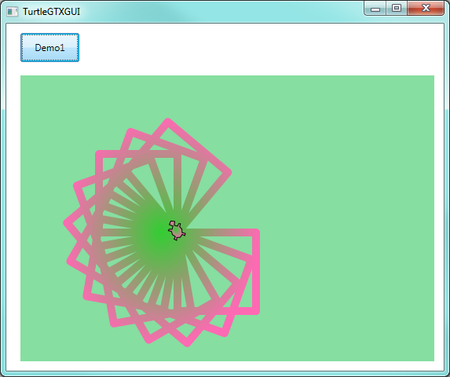
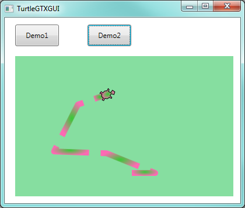
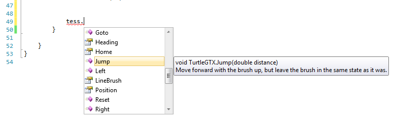
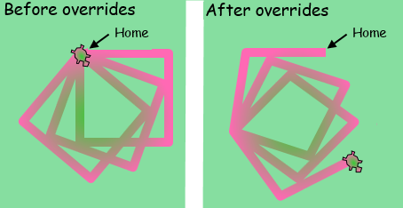
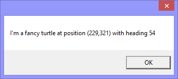

28. Inheritance¶
We’ve spoken a few times in the book about the is-a relationship: the idea
that a FileNotFoundException is-a IOException which in turn is-a Exception,
which is-a Object.
We sometimes use the terms subtype, derived class, child class
or descendant class to mean the same as is-a.
A FileNotFoundException is a subtype (or derived class, or child class) of Exception.
Conversely, we say Exception is a supertype, a base class, a parent class
or an ancestor class of FileNotFoundException.
We say that a derived class specializes the base class.
The Exception type is important because it can be used in a try ... catch construct.
But when we say some base type can be used in some way, we really mean that any of its
derived (or child) types will also work in that same situation.
This is a very powerful idea: something that works for a base type T will also be able to work for any class derived from T.
We’ve seen this idea repeatedly in our GUI work too. All the controls we’ve used
— Canvas, Button, TextBox, etc., on are derived from UIElement.
A window knows how to position, layout, and display any UIElement, and how to interact
with the control for mouse click events, key press events, giving the control focus, and
so on.
So what is inheritance? When we derive a child class from a parent class, the
child automatically inherits all the capabilities of the parent. So a Button
can do everything that its ancestors can do. And it then gets some extra
specialization — it might look different, or know about Click events.
All the GUIs we’ve built are specialized types of the Window class. So our
own windows have their own buttons and canvases, but they’re also able to be
resized on the screen, they know how to respond to clicking the close button,
they already know how to work with the Title bar, key presses, mouse movement,
timers, etc. And we didn’t have to do anything to get that all for free!
It was all inherited.
Imagine if human inheritance worked like this: you always inherited your mom’s capabilities. She might be a great athlete, a concert pianist, and a master chef. You’d start off already having those capabilities! (Unlike humans, C# classes only ever have one parent class!)
28.1. Let’s do it!¶
We’re going to create a new class that inherits from an existing class, and we’ll give it some new capabilities that it doesn’t already have.
We want a TurtleGTX type [1]. We’ll start by adding two new methods to
our specialized turtles. The Jump(distance) method will make our
turtle hop the specified distance without drawing a line. And the Spin()
method will spin our turtle around a few times and leave it facing in a
random direction. These should be additions to what the turtles can
already do, so we still expect our new turtles to be able to
move forward, change the brush, stamp a footprint, and do everything else.
| [1] | GTX was a suffix used on earlier motor cars, standing for “Grand Tourismo X”. The GTX models had higher performance, more features, were fancier, and cost more. Check out some retro images of the 1971 Plymouth GTX! |
We create a new class called TurtleGTX, add a few using directives
and provide a constructor. So we start with this:
1 2 3 4 5 6 7 8 9 10 11 12 13 14 15 16 17 18 19 20 | using System;
...
using System.Windows.Media;
using ThinkLib;
namespace Fragments
{
public class TurtleGTX: Turtle
{
Random rng;
public TurtleGTX(Canvas playground, double homeX=50, double homeY=100)
: base(playground, homeX, homeY)
{
rng = new Random();
LineBrush = new RadialGradientBrush(Colors.LimeGreen, Colors.HotPink);
BrushWidth = 10;
}
}
}
|
Line 8, the definition of the class, says “this class inherits from Turtle”, so
TurtleGTX is-a Turtle and can already do everything that our ordinary
plain turtles can do.
When we create instances of our new class the constructor at line 12 will be called. What is needed now is to also run our inherited constructor code — because it does the setup steps for those parts of the new object that are the “ordinary” turtle, and then we can do a few extra initialization steps that apply to the “extended” parts of the object that are only found in the fancier GTX models.
So line 13 calls the constructor code that was originally written in the base class.
In a child class, the keyword base always refers to “as inherited from my parent”.
So base(...) means “call my constructor code as I initially inherited it”, and base.Forward(10);
means “call my Forward method, as I initially inherited it”.
Lines 15-17 are executed after the base constructor completes its execution.
We instantiate a random number generator object (we’ll need it shortly for
the Spin method we intend to add), and we change two of the default settings:
whereas “ordinary” turtles come out of the factor with thin magenta brushes, we’ll
do the factory initialization of our GTX turtles with fat brushes and a fancy brush.
This will help us to easily see that we’re working with a GTX turtle, not a plain one.
Notice in lines 16 and 17: LineBrush and BrushWidth are properties of a turtle instance.
So usually, we’d have to qualify them with an object, and say Alex.BrushWidth. But
because of inheritance, these are now our own methods for our own object.
We can call the method without qualification because it is part of this class —
not because we wrote it explicitly, but because we inherited all the parent’s
public or protected members.
Let’s set up our usual GUI with a canvas and a button, instantiate a turtle
of type TurtleGTX, and get it to do some ordinary things.
1 2 3 4 5 6 7 8 9 10 11 12 13 14 15 16 17 18 19 20 21 22 23 | public partial class TurtleGTXGUI: Window
{
TurtleGTX tess;
public TurtleGTXGUI()
{
InitializeComponent();
tess = new TurtleGTX(playground, 200, 200);
}
private void btnDemo_Click(object sender, RoutedEventArgs e)
{ // Draw three squares, and turn a bit after each one...
for (int i = 0; i < 3; i++)
{
// Draw a square
for (int side = 0; side < 4; side++)
{ tess.Forward(100);
tess.Right(90);
}
tess.Right(20);
}
}
}
|
The only changes now are the type of tess, in lines 3 and 8. Otherwise, everything that we inherited from the plain turtle type works exactly as before. Clicking the button a few times produces this:
Here’s a further observation: in our first chapter on methods we created a method to get a turtle to draw a square. Let’s re-use that code, and replace lines 11-22 above with this new code:
1 2 3 4 5 6 7 8 9 10 11 12 13 14 15 16 17 | private void drawSquare(Turtle t, double sz)
{
for (int side = 0; side < 4; side++)
{
t.Forward(sz);
t.Right(90);
}
}
private void btnDemo_Click(object sender, RoutedEventArgs e)
{ // Draw three squares, and turn a bit after each one...
for (int i = 0; i < 3; i++)
{
drawSquare(tess, 100);
tess.Right(20);
}
}
|
It still works. But, notice a very subtle thing: the type
of argument tess line line 14 is TurtleGTX, but the type of
the parameter in drawSquare is Turtle.
Yet the compiler doesn’t give an error, and the code works. This is
because a TurtleGTX is-a Turtle.
A object of a descendant type can be assigned to, or be used as if its
type is an ancestor type. We can use tess as a plain old turtle,
assign her to a plain old turtle type of variable, pass her to a
parameter of type Turtle. So any methods we already have to work
with Turtle can automatically also work with any types of objects that
are descendant from Turtle.
This feature is called subtype polymorphism. Polymorphism
means many (poly) types or forms (morph). The drawSquare method is polymorphic
in that it can work with different types of objects, just as long as
they’re all descendant types of Turtle.
OK. We are now ready for making some more serious improvements to the GTX version of the turtle.
28.2. Adding new behaviour¶
Adding new behaviour is as easy as adding some new public methods to the
TurtleGTX class. Let’s implement the two methods we wanted:
1 2 3 4 5 6 7 8 9 10 11 12 13 14 15 16 17 18 19 20 21 22 | public void Jump(double distance)
{
if (BrushDown)
{
BrushDown = false;
Forward(distance);
BrushDown = true;
}
else
{
Forward(distance);
}
}
public void Spin()
{
int theta = rng.Next(360);
for (int t = 0; t < 199; t++)
{
Right(theta);
}
}
|
If the brush is down, jumping requires picking up the brush and putting it back down after moving. To spin the turtle a random amount, we pick a random angle and then repeatedly turn by that angle, so that we can briefly see the turtle spinning on the playground before it sets off on its (random) new heading.
We go back to the GUI, add another button and another handler, and this test code:
1 2 3 4 5 6 7 8 | private void btnDemo2_Click(object sender, RoutedEventArgs e)
{
tess.Forward(40);
tess.Spin();
tess.Forward(10);
tess.Jump(20);
tess.Forward(20);
}
|
Now we can use the extended features of the new class (and, if you watch IntelliSense, it knows about them too.)
Clicking the new button a few times gives us something like this ...
Let’s make one more refinement to complete this section.
The IntelliSense for the new Jump and Spin methods is not helpful.
We usually expect some help explaining briefly what a method does, and
what it’s parameters and return values are. In C#, we can write
special comments (they start with three forward slashes ///) before
any definition. These will be picked up by the
compiler and become part of the IntelliSense mechanism. (You’ll
find in Visual Studio that the editor understands the three slashes,
and will write the skeletons of the comments for you.)
So we go back to the TurtleGTX class now, and add suitable comments:
1 2 3 4 5 6 7 8 9 10 11 12 13 14 15 16 17 18 19 20 | /// <summary>
/// A fancy type of Turtle to illustrate some ideas about inheritance.
/// </summary>
public class TurtleGTX: Turtle
{
...
/// <summary>
/// Move forward with the brush up, but leave the brush in the same
/// state as it was.
/// </summary>
/// <param name="distance">How far to hop forward.</param>
public void Jump(double distance)
...
/// <summary>
/// Spin the turtle a few times and leave it facing in a random heading.
/// </summary>
public void Spin()
...
|
With these comments added (notice we’ve commented above the class and the two new methods) we’ll see the results in IntelliSense:
28.3. Changing existing behaviour¶
We’ve added some new behaviour to our TurtleGTX type. But so far,
all the underlying behaviour of the base Turtle class remains unchanged.
There is a second use for inheritance — to override behaviour from the base class, so that our child class objects work differently.
Where might this be useful?
Suppose we have a spelling checker with a CheckSpelling(string word) method.
Perhaps we could make a specialized spelling checker that knows local slang or
domain-specific words. So we’d like to change how CheckSpelling goes about
its business, by making it also look in our slang dictionary.
Or consider a FileStream object — it allows reading and writing to a stream
that it connects to an underlying file. Typical file systems have some
potential security risks. If your program writes sensitive passwords or
data to disk, some other program might be able to access it or corrupt it.
So Windows provides what is called Isolated Storage — a
private storage area that belongs to a single program and user. (Other
users will get their own isolated storage, and other applications get their
own isolated storage too.) So there is a class called
IsolatedStorageFileStream that is derived from FileStream. It can
only open, create, read and write data in isolated storage. So in this case,
it must restrict what the base class is capable of.
You can think up other examples too. You might want to inherit from a Web Browser control (there is one in WPF), but modify some existing behaviour by overriding its methods so that your users can only access “approved” web sites.
28.4. Let’s do it!¶
We’ll continue with the TurtleGTX class. Unfortunately, our
turtle has just become a teenager [2] and does the opposite of
whatever they’re told to do. And they’ll only complete 90% of whatever
is asked. So we’ll override the Left method
to make it turn Right instead, and vice-versa, and
Forward will move backward. We add the following methods
to the class:
| [2] | This is not a bias against teenagers. But it makes a fun and understandable way to explain some pretty complicated ideas... |
1 2 3 4 5 6 7 8 9 10 11 12 13 14 | public override void Left(double degrees)
{
base.Right(degrees*0.9);
}
public override void Right(double degrees)
{
base.Left(degrees*0.9);
}
public override void Forward(double distance)
{
base.Forward(-distance*0.9);
}
|
The override keyword says that we’re changing our existing behaviour that we
inherited from the parent class. In our modified interpretation of what Left should do,
at line 3, we call our inherited Right method,
(but we only turn 90% of what was requested).
So calling Left(90) on a GTX turtle will turn it to the right by 81 degrees.
Similarly, we negate the distance: our new Forward method calls our inherited
Forward method, but with a different argument.
We go back to the first demo that drew three squares. On the left we show how it used to work. On the right we show what the same calling code produces now after we’ve overridden the behaviour of these three methods.
Now let’s make a really important observation, one which is key to having
a good understanding of inheritance and behaviour that is overridden.
Our code made use of this DrawSquare method.
1 2 3 4 5 6 7 8 | private void drawSquare(Turtle t, double sz)
{
for (int side = 0; side < 4; side++)
{
t.Forward(sz);
t.Right(90);
}
}
|
As we remarked earlier, the parameter type here is Turtle. Because
of subtype polymorphism, we can pass a TurtleGTX argument to it.
So what does the method call at line 5 actually do? Does it use
our modified Forward method (that actually goes backwards), or
does it use the original Forward method because t is defined
as a Turtle? Or, using our silly analogy, does the teenager still
behave like a teenager even though they’re here in the role of “person”?
Yes, t is still a teenager!
t references an object: that object is a TurtleGTX. The fact
that the variable can reference a Turtle doesn’t change what is in memory —
in memory, we have a TurtleGTX, with its own behaviour and methods.
So at line 6, its Right method actually turns to the left.
28.5. A popular override¶
Every type ultimately inherits from the object base class. So every object
that we can possibly create in C# has four methods that it inherits from object.
One of those is ToString(). Whenever C# needs to convert an object to a string
(as it needs to do if we convert the object to a string using, say, string formatting),
this method gets called to do the conversion. Let’ see what happens when we call
ToString() on tess:
1 | MessageBox.Show(tess.ToString());
|
We’ll get our message box popping up, and showing the type of tess. That is what the default behaviour is. But, of course, we could override it for our TurtleGTX.
1 2 3 4 5 6 | public override string ToString()
{
string msg = string.Format("I'm a fancy turtle at position ({0:f0},{1:f0}) with heading {2:f0}",
this.Position.X, this.Position.Y, this.Heading);
return msg;
}
|
Now we get something more special:
It is quite usual to override the ToString() method and to have it report some
useful information about its internal state.
28.6. A touch of sanity¶
Wouldn’t it be nice if we could inherit from our bank account class, and override its withdrawal method so that each time we withdraw money we could call the inherited deposit method instead!
There are two security mechanisms that help.
- We can mark a class as
sealed. It is not possible to derive any subclasses from a sealed class. Many of the .NET framework classes are sealed, so that we cannot maliciously or erroneously change their behaviour. Try to inherit from thestringclass, and see what happens. Or read the documentation for thestringclass. - You cannot override a method in a class unless the class definition itself
catered for that when it was originally written. A class writer can mark
individual methods or properties in a class with a keyword
virtual. This means “can be overridden by my descendants”. So the Turtle class has given us permission to override methods likeLeftandForward, but at the same time there are some of its methods (FlushToPlaygroundis one) that it does not allow us to override.
28.7. Glossary¶
- ancestor class
- Same as base class.
- base class
- A class which is used as a basis for another more specialized derived class.
- child class
- Same as derived class.
- derived class
- A class which defined in terms of another class by inheriting the functionality of the base base.
- descendant class
- Same as derived class.
- hierarchy
- A tree-like structure. In this chapter, we’ve been interested in how classes are related to each other, so the hierarchy is the “family tree” of classes.
- inherit
- To receive capability and behaviour from a base class.
- instance
- An object whose type is of some class. Instance and object are used interchangeably.
object- This is the ultimate base class of all other classes in the .NET framework, and in C#. It is the root of the class hierarchy from which every other class is derived. (In the framework, its name is spelled with a capital ‘O’, in C#, with a lower-case ‘o’.)
override- A C# keyword that indicates that a method definition is modifying the behaviour that it inherited from its base class.
- parent class
- Same as base class.
- polymorphism
- Able to work with many types. The origin of the word is from “poly) (many) and “morph” (forms).
- sealed class
- A class that cannot be derived or used as a base for a new class.
- subtype
- Same as derived class.
- subtype polymorphism
Polymorphism that is possible because anything that works for type T will automatically also work for any subtypes of T.
There are other mechanisms for polymorphism too. Contrast this idea to the “parametric polymorphism” we get with generic types, e.g.
List<Turtle>orList<Button>. There is no subtype relationship betweenTurtleandButton, yetListcan handle the different types.- supertype
- Same as base class.
28.8. Exercises¶
- Look up the
IO.Streamclass at http://msdn.microsoft.com/en-us/library/system.io.stream.aspx, expand its inheritance hierarchy and determine the key purpose or responsibilities of at least three of its derived classes. - Add an
Odometerproperty toTurtleGTXso that a turtle keeps track of the mileage (total distance) it has travelled since it was created. To keep it simple, only count the distance from theForwardmethod. - If you travel backwards (
tess.Forward(-50)) does your odometer count up, or does it count down? What should it do? Fix it. (On older cars with mechanical odometers, some unscrupulous car dealers run the odometer backwards to improve the resale value. Drive a car backwards down the street, and determine whether the odometer counts forward or backwards.) - Our TurtleGTX has a brush that it uses to draw its lines. But brushes need
ink. Give the turtle a supply of ink. On each move that draws a line (i.e.
only when the pen is down) consume some of the ink supply. When the ink runs
out, throw an “Ink Cartridge Empty” exception. Any attempt to make the turtle
draw after that should throw the exception. Provide a way for the client to
interrogate how full the ink tank is, and provide a
ChangeInkCartridgemethod that can fix our broken turtle. (Bonus exercises could be to make the rate at which the ink gets consumed depend on the width of the brush, or, like inkjet printers, to have differernt ink cartridges for Cyan, Magenta, Yellow and Black ink supplies. The possibilities seem ink-credible.) - In our Recursion chapter we learned about great-looking Koch fractals.
Our teenage TurtleGTX becomes fascinated by the nesting of the patterns.
So whenever he/she is asked to move
Forwardby any distance, the turtle playfully does a detour, making a Koch order 2 curve instead. Provide an override for theForwardmethod to achieve this. - Add to the previous exercise: provide a
KochOrderproperty that the user can set. Give it an initial default value of zero: this will mean the turtle takes no detours, since a Koch line of order 0 is just a straight line. Then if the user sets the value of KochOrder to be 3, the turtle will detour with order 3 Koch curves.